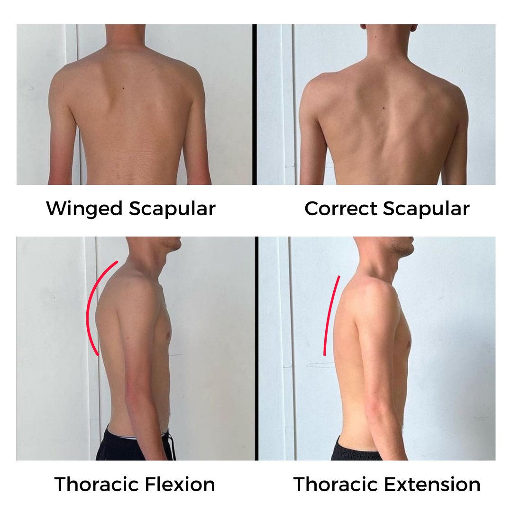

We've all heard it at some point: "pull your shoulders back!" Typically, this directive comes from well-meaning friends, family, or even health professionals.
Although people swear by this advice, we rarely see it work. Let us dissect the facts to understand the potential negative effects of "pulling your shoulders back."
Does retracting the shoulders genuinely improve posture, or could it exacerbate the problem?
Does pulling your shoulders back provide a solution for the back pain under your shoulder blade?
Let’s look into the anatomy of poor posture and why simply pulling your shoulders back might not be the best idea.
A Quick Crash Course:
Anatomy of the Shoulders, Scapulae and Upper Back
The shoulder is a complex structure. The shoulder joint is a complex interaction between the humerus, scapula, clavicle, and surrounding muscles and ligaments. The scapula (shoulder blade) plays a pivotal role in shoulder movement. It slides over the back portion of the rib cage, known as the thoracic spine, which is vital for various arm functions.
Now, the thoracic spine is the bridge between our cervical (neck) and lumbar (lower back) spine. Its integrity and alignment are essential for maintaining a stable platform for the scapulae and shoulders to operate efficiently. When things go awry with the thoracic spine, it has a domino effect, leading to various other complications.
This may result in shoulder blade pain, cervical spine pain and upper back and shoulder pain. Regardless of the type of pain, we are advised to: "squeeze your shoulder blades together."
This advice does little for upper back pain and we are about to uncover why.
Rounded Shoulders: The Underlying Problem
Contrary to popular belief, the real problem of rounded shoulders isn't just laxity in the shoulder muscles.
A compromised thoracic spine and a disconnect between the shoulders and the spine is at its core. The alignment of the thoracic spine determines how the scapulae sit. This in turn influences the positioning of the shoulders.
The True Cause of Rounded Shoulders: A Sequence of Events
To understand the complexity of rounded shoulders, let's unpack the sequence of how it commonly manifests:
Diet and Abdominal Distress:
Consuming a Western diet or facing issues with gut health can lead to bloating in the abdomen.
Core Disengagement:
As the abdomen expands, the core muscles stretch out, leading to their disengagement.
Effects of Sedentary Lifestyle:
Prolonged sitting subjects the glutes and posterior chain to passive stretching, further weakening these crucial muscles.
Compromised Pelvic Position:
With a weakened core and overstretched glutes, upon standing, the pelvis shifts and tilts forward.
Spinal Alignment Takes a Hit:
As the pelvis moves, the spine is dragged into a diagonal angle as seen in the image below. This compromises its natural alignment. Over time, the upper spine bends, succumbing to the downward force of gravity.

Misaligned Scapulae: A bent thoracic spine results in the scapulae not sitting flush against the back.
Scapular winging occurs when the scapulae lose their natural position against the rib cage because of reduced suction capacity. We are going to discuss workouts for winged scapula below.
When the scapulae and thoracic spine are in a compromised position, the lat muscles are unable to function properly. The shoulders slump further; unsupported by the lats, scapulae, or the spine.
Misguided Advice: Enter the age-old advice: "pull your shoulders back!" At this stage, this direction isn't just ineffective but might intensify the underlying issues. It may increase symptoms such as sharp pain when you raise your arms, or muscle strain below the right or left shoulder blades.
Simply "pulling the shoulders back" is a superficial remedy that doesn't address the root cause. To correct posture, you need to understand and address issues from the core to the spine and shoulders.
For lasting improvements, it's essential to approach posture holistically, recognising the interconnected nature of our musculoskeletal system. Always consult a biomechanics specialist for guidance tailored to your unique body and needs.

WHAT ACTUALLY CAUSES SLUMPED SHOULDERS & POOR POSTURE?
When discussing posture and rounded shoulders, one of the most oft-repeated pieces of advice is to "pull your shoulders back." On the surface, it seems like a logical solution.
After all, if your shoulders are slumping forward, shouldn't pulling them back correct the issue? The reality is more intricate. Let's delve into why this simplistic advice can intensify the real underlying issues: flaccid, overstretched muscles, diminished contractile potential, and structural misalignment.
1. Overstretched Muscles: The Detriment of Forcing Alignment
Our muscles have a specific resting length that allows for optimal function. When muscles stretch too far, they lose their ability to contract and generate force.
Research Insight: A study published in the Journal of Biomechanics found that muscles that are overstretched produce less power. This is primarily because muscle fibres, when stretched beyond their optimal length, can't produce as much force.
When one forcibly retracts the shoulders, they are essentially pulling on already overstretched muscles. This particularly affects the mid and lower trapezius and the rhomboids. This can exacerbate the overstretched state of these muscles, further reducing their functional capacity.
2. Reduced Contractile Potential: Compromising Muscle Activation
Muscle contractility is the ability of muscle fibres to shorten and produce force. This is vital for maintaining posture, generating movement, and providing stability to our joints.
Research Insight: According to a study in the European Journal of Applied Physiology, the ability for a muscle to contract is influenced by its length-potential. This is the muscles ability to maintain activation through a stretch. Overstretching can shift this relationship, reducing the contractile potential.
By constantly "pulling the shoulders back," individuals might inhibit the natural activation patterns of the surrounding muscles. Over time, this can lead to muscle imbalances, with some muscles becoming overactive while others remain under-active.
3. Misalignment of Structure: Distorting the Body’s Natural Balance
Our musculoskeletal system is a delicate balance of bones, muscles, and connective tissues. Each component has its designated place and function.
Research Insight: A review in the Annals of Rehabilitation Medicine emphasised that posture is a dynamic balancing act. Any alterations in posture can lead to compensations elsewhere in the system.
By forcibly retracting the shoulders, you're not just moving the humerus and the scapula. You are potentially altering the positioning of:
-
the thoracic spine,
-
the rib cage,
-
and even the neck.
This forced position can create undue stress on the joints and soft tissues, leading to pain and further postural problems.
While "pulling the shoulders back" might seem like a quick fix, it does not address the root causes of postural issues. It can, in fact, intensify problems related to muscle length, contractile potential, and structural alignment.
For a truly effective solution, one should aim for a holistic approach. Addressing the underlying factors and seeking guidance from specialists who can provide tailored interventions based on individual needs. Seeing one of our Human Biomechanics Specialists is an excellent solution.
While "pulling the shoulders back" might seem like a quick fix, it does not address the root causes of postural issues. It can, in fact, intensify problems related to muscle length, contractile potential, and structural alignment. For a truly effective solution, one should aim for a holistic approach, addressing the underlying factors and seeking guidance from specialists who can provide tailored interventions based on individual needs.
Exercises To Pull Shoulders Back
To successfully get your shoulders to pull back, you need to lay a good foundation.
Various muscles such as your sternocleidomastoid (SCM's) need to be firing. This is because without strong neck muscles, you have nothing to anchor from. Pulling your shoulders back will also pull your neck back, potentially causing a retracted jaw.
If you're doing run-of-the-mill exercises to get your shoulder back, you could be doing damage to your posture.